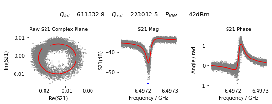
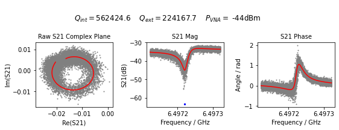
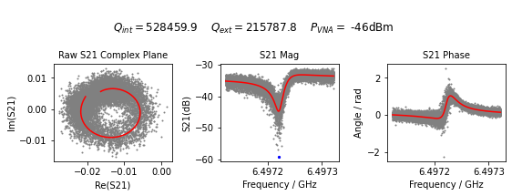
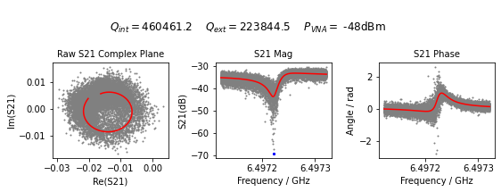
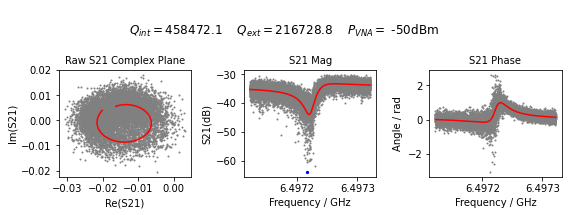
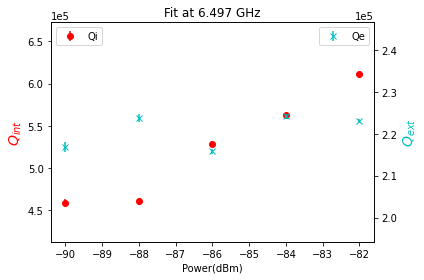
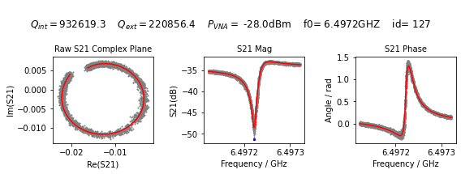

Labber examples¶
[2]:
import quantum_fitter as qf
path = 'Z:/KianG/Resonator_Fitting_Test_Data/Al_on_sapphire_chip3/Power_sweeps_all_res_40dB_att_TWPA_on.hdf5'
qf.fit_all_labber_resonator(file_loc=path,
frequency=6.4972218e9,
power=list(range(-50, -40, 2)), # Doesn't include 8
attenuation=40,
plot_all=True)
-42
C:\Users\rbcma\anaconda3\envs\fitter\lib\site-packages\scipy\signal\_savitzky_golay.py:333: ComplexWarning: Casting complex values to real discards the imaginary part
x = x.astype(np.float64)
-44
C:\Users\rbcma\anaconda3\envs\fitter\lib\site-packages\scipy\signal\_savitzky_golay.py:333: ComplexWarning: Casting complex values to real discards the imaginary part
x = x.astype(np.float64)
-46
C:\Users\rbcma\anaconda3\envs\fitter\lib\site-packages\scipy\signal\_savitzky_golay.py:333: ComplexWarning: Casting complex values to real discards the imaginary part
x = x.astype(np.float64)
-48
C:\Users\rbcma\anaconda3\envs\fitter\lib\site-packages\scipy\signal\_savitzky_golay.py:333: ComplexWarning: Casting complex values to real discards the imaginary part
x = x.astype(np.float64)
-50
C:\Users\rbcma\anaconda3\envs\fitter\lib\site-packages\scipy\signal\_savitzky_golay.py:333: ComplexWarning: Casting complex values to real discards the imaginary part
x = x.astype(np.float64)






[3]:
#import matplotlib.pyplot as plt
#import numpy as np
path = 'Z:/KianG/Resonator_Fitting_Test_Data/Al_on_sapphire_chip3/Power_sweeps_all_res_40dB_att_TWPA_on.hdf5'
t5 = qf.LabberData(filePath=path)
# method with 'lc', 'aw', 'lcaw' or None
t5.pull_data(frequency=6.4972218e9, power=[-28])
t5.fit_data(model='ResonatorModel', method='lc', resonator_plot=True, window=0.05, sigma=0.15, verbose=1)
#plt.show()
[[-2.8000000e+01 6.4972218e+09]]
C:\Users\rbcma\anaconda3\envs\fitter\lib\site-packages\scipy\signal\_savitzky_golay.py:333: ComplexWarning: Casting complex values to real discards the imaginary part
x = x.astype(np.float64)
[[Model]]
Model(S21funct)
[[Fit Statistics]]
# fitting method = least_squares
# function evals = 119
# data points = 20002
# variables = 8
chi-square = 8.6363e-04
reduced chi-square = 4.3194e-08
Akaike info crit = -339177.053
Bayesian info crit = -339113.824
[[Variables]]
f_0: 6.49723104 +/- 9.5398e-09 (0.00%) (init = 6.497222)
Qi: 932.619276 +/- 1.76881908 (0.19%) (init = 518119.8)
Qe_mag: 220.856382 +/- 0.11551741 (0.05%) (init = 114655.4)
Qe_theta: -0.67037302 +/- 5.2380e-04 (0.08%) (init = 0)
A: 0.01903253 +/- 1.4910e-05 (0.08%) (init = 0.01910321)
alpha: 180.180610 +/- 16.3862554 (9.09%) (init = 0)
phi1: -455.682198 +/- 2.52483947 (0.55%) (init = 0)
phi2: 2963.53586 +/- 16.4044590 (0.55%) (init = 3.007161)
[[Correlations]] (unreported correlations are < 0.100)
C(phi1, phi2) = -1.000
C(A, phi2) = 0.984
C(A, phi1) = -0.984
C(f_0, Qe_theta) = -0.835
C(Qi, Qe_theta) = 0.557
C(Qe_mag, A) = -0.518
C(Qe_mag, phi1) = 0.497
C(Qe_mag, phi2) = -0.497
C(Qe_theta, alpha) = 0.496
C(f_0, Qi) = -0.495
C(Qe_theta, A) = 0.442
C(f_0, alpha) = -0.437
C(Qe_theta, phi2) = 0.388
C(Qe_theta, phi1) = -0.388
C(Qe_mag, alpha) = 0.385
C(Qi, alpha) = 0.355
C(Qi, Qe_mag) = 0.289
C(f_0, A) = -0.287
C(f_0, phi2) = -0.246
C(f_0, phi1) = 0.246
C(f_0, Qe_mag) = -0.107
C(Qi, phi2) = 0.101
C(Qi, phi1) = -0.101
[3]:
<quantum_fitter._fit.QFit at 0x1e21ce03ac0>

[ ]: